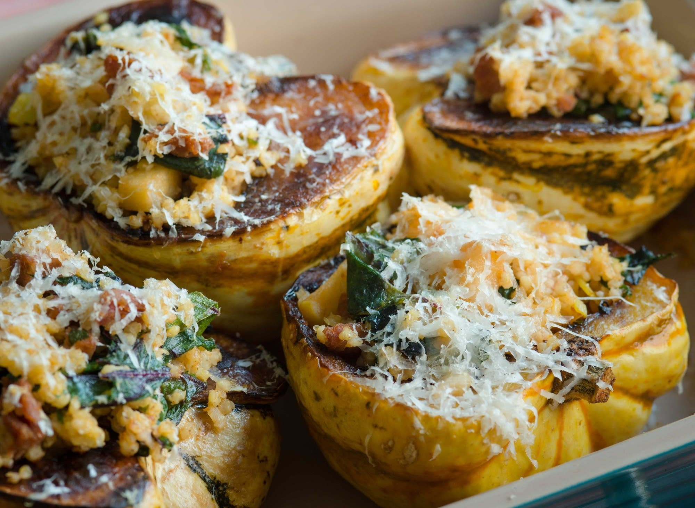

Stuffed Winter Squash

Description
Every fall, the squash calls begin again. They start
just here and there. But in October, the pace quickens,
and the calls become more panicked. “Help. Need squash
recipes.”
Who can resist those winter squash? The varieties are as
plentiful as the stone fruits were a few weeks ago, and
it’s hard to remember that you might actually have to eat
them when you bring them home. So cheap per pound! And
they store so well! And in they go, into your basket, and
before you know it . . . help!
My favorite thing to do with a winter squash is to stuff
it. Not only will you use that winter squash taunting you
from the counter, you will also use last night’s grain,
sad apples that came back in the lunch box one too many
times, even old corn bread—they all find their home here.
The recipe below is a guideline, but most combinations of
grain, green, apple, and meat work perfectly.
Ingredients
- 2 acorn, delicata, dumpling, or carnival squash, cut
in half through the stem and seeded
- 2 teaspoons olive oil, plus more for rubbing the
squash and oiling the dish
- 3/4 teaspoon kosher salt
- 6 ounces chorizo or sweet sausage, crumbled or cut into
small pieces
- 1 cup chopped apple (1 to 2 apples)
- Freshly ground pepper
- 2 cups sliced tender greens (spinach, tatsoi, kale,
Swiss chard), cut into ribbons
- 4 fresh sage leaves, coarsely chopped
- 2 cups cooked millet, rice, or quinoa
- 1/2 cup grated Cheddar cheese
Steps
- Preheat the oven to 375° F. Rub the flesh of each squash
half with olive oil, and oil an ovenproof dish or baking
sheet. Sprinkle the whole baking dish with 1/2 teaspoon
of the salt. Lay the squash flesh side down in the dish
and bake until it is very tender when pricked with a
fork, 30 to 40 minutes. Remove the squash from the oven
and raise the oven temperature to 425°F.
- Meanwhile, heat the remaining olive oil in a large
skillet over medium heat. Add the chorizo and fry until
browned. Remove from the pan and set aside. Add the leeks
to the hot oil and cook until soft, about 3 minutes. Add
the apple, remaining 1/4 teaspoon salt, and pepper, and
cook for another minute. Add the greens, sage, cooked
grains, and reserved chorizo. Cook for another minute,
stirring to combine, and remove from heat. Taste, and
adjust the salt and pepper if needed.
- Turn the cooked squash over in the baking dish so it is
flesh side up. (Be careful, as steam will escape when you
turn it.) Scoop the filling into the cavity of each
squash half, piling it into a mountain so that it holds
as much as possible. Sprinkle with cheese and bake until
the cheese melts, about 10 minutes.